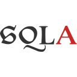
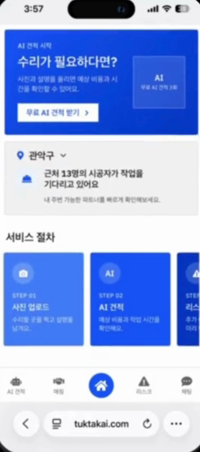
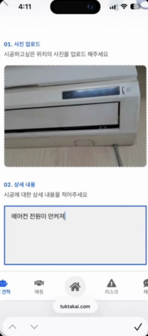
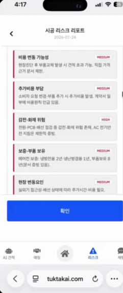
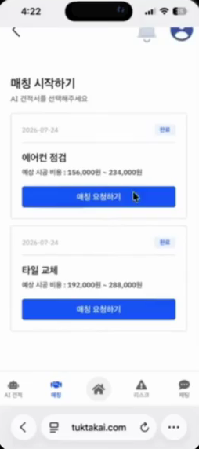
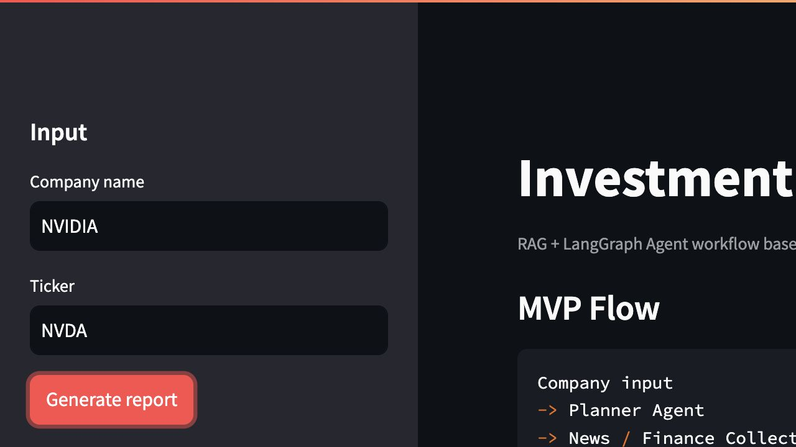
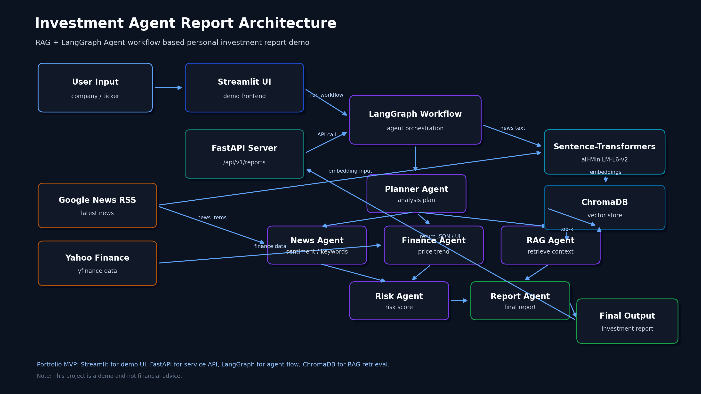
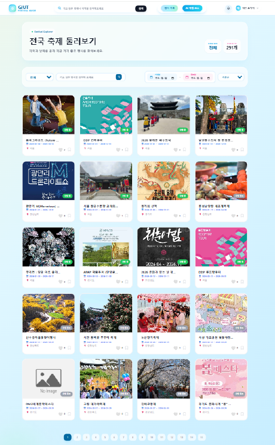
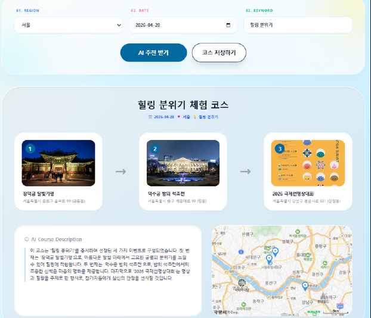
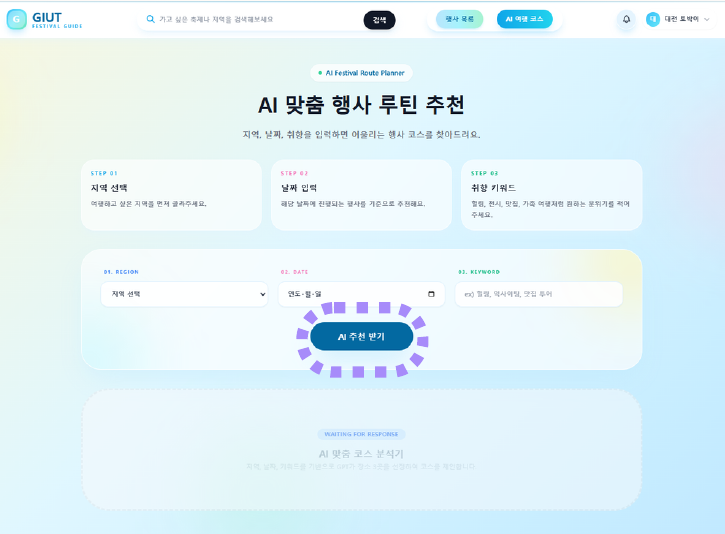

About
전지원
AI 서비스 백엔드 개발자
020799@naver.com
github.com/JW020799
jw020799.github.io
일하는 기준 세 가지
1. 좋은 결과보다 실패 조건을 먼저 정의합니다
근거 문서가 부족한 카테고리는 FAILED로 분리하고, 재무 데이터 수집이 실패하면 unavailable로 반환합니다. 틀린 답보다 위험한 것은 틀렸는지 알 수 없는 답입니다.
2. 검증 근거는 숨기지 않고 화면에 드러냅니다
유사도 점수와 참조 문서를 응답에 그대로 노출해 사용자가 직접 판단할 수 있게 합니다.
3. 의견 차이는 같은 기준의 측정으로 좁힙니다
정확도 하나로 갈리던 팀 의견을 "오답 통과율"이라는 지표로 바꿔 측정하고 합의했습니다.
Tech Stack
Backend

SQLAlchemyAI · RAG
Infra · Frontend
Project 01 · Team
TUKTAK
AI 기반 집수리 견적 · 리스크 리포트 · 시공자 역경매 매칭 플랫폼
사용자가 수리 사진과 설명을 올리면 AI가 기준 견적과 리스크 리포트를 먼저 만들고, 시공자 제안 비교로 이어집니다. 집수리에서 소비자가 겪는 정보 비대칭을 줄이는 것이 목표입니다.
주요 기능
- 사진 + 설명 → 수리 요청 구조화 → AI 견적서 생성
- 근거 문서 71개 기반 RAG 리스크 리포트 (추가 비용 · 안전 · 계약 · 현장)
- 이미지 유사사례 검색으로 기존 수리 사례 매칭
- 시공자 역경매 매칭 · 제안 비교 · 채팅 · 리뷰
기술 스택
GitHub · github.com/JW020799/tuktak-project-summary · 상세 페이지 →




홈 → 사진 업로드 → AI 리스크 리포트 → 시공자 매칭 (시연 영상 캡처)
Project 02 · Solo
Investment Agent Report
RAG + LangGraph Agent 기반 투자 리포트 데모
기업명 · 티커를 입력하면 뉴스와 재무 데이터를 수집해 RAG 검색과 Agent 분석으로 참고 리포트를 생성합니다. 부트캠프 수료 다음 날 시작해 6일 만에 수집부터 API까지 혼자 만들었습니다.
주요 기능
- Google News RSS 뉴스 수집, yfinance 재무 데이터 수집과 실패 처리
- Sentence-Transformers 임베딩 + ChromaDB 벡터 검색
- Planner · RAG · News · Finance · Risk · Report 6개 Agent 워크플로우
- FastAPI 리포트 생성 · 저장 · 조회 API 4개, Streamlit 데모, Docker Compose
기술 스택
GitHub · github.com/JW020799/investment-agent-report · 상세 페이지 →

Streamlit 데모 화면 — 기업명 · 티커 입력 후 리포트 생성

아키텍처 — Streamlit / FastAPI → LangGraph 워크플로우 → Agent 6개 → ChromaDB (README 수록)
Project 03 · Team
GIUT
공공데이터와 AI를 활용한 지역 행사 탐색 · 추천 코스 서비스
한국관광공사 공공데이터로 지역 행사를 탐색하고, OpenAI API로 지역 · 날짜 · 취향에 맞는 행사 코스를 추천하는 웹 서비스입니다.
담당 업무
- Event · EventDetail · Course 모델과 Pydantic 스키마 설계, Course API 구현
- JWT + HttpOnly Cookie 기반 회원가입 · 로그인 API
- 지역 · 날짜 · 키워드 조건 행사 검색 · 필터링 API
- GPT 추천 코스 저장 · 마이페이지 조회 API, React 주요 화면 연동
- AWS EC2에 Docker Compose로 배포
기술 스택



행사 목록(지역 · 날짜 · 검색 필터) / AI 행사 코스 추천 입력 · 결과